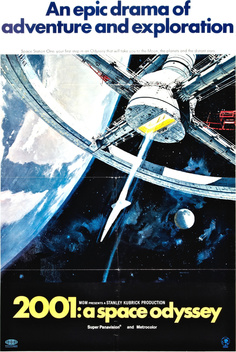
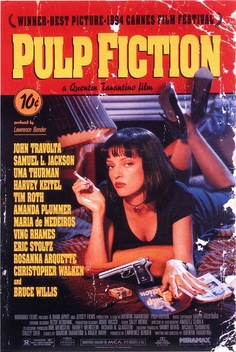
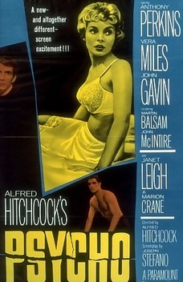
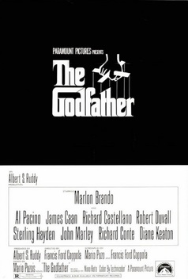

VINTAGEFLIX BLOCKBUSTER
VINTAGEFLIX BLOCKBUSTER
VintageFlix Blockbuster é um refúgio para os verdadeiros amantes do cinema. Somos apaixonados pelos filmes clássicos, que contam histórias autênticas e emocionantes. No nosso site, você vai encontrar um catálogo de filmes que nos fazem viajar no tempo! Criteriosamente selecionados para levar você em uma jornada cinematográfica inesquecível. Além de tudo, nosso catálogo de filmes contem uma sinopse detalhada sobre cada um, queremos que você se sinta em casa e tenha a melhor experiência possível, como se estivesse em uma autêntica locadora vintage.
|  |  |  |  |
2001: Uma Odisseia no Espaço (1968) |
Pulp Fiction (1994) |
Psicose (1960) |
O Poderoso Chefão (1975) |
|
Diretor: Stanley Kubrick |
Diretor: Quentin Tarantino |
Diretor: Alfred Hitchcock |
Diretor: Francis Ford Coppola |
|
Uma estrutura imponente preta fornece uma conexão entre o passado e o futuro nesta adaptação enigmática de um conto reverenciado de ficção científica do autor Arthur C. Clarke. Quando o Dr. Dave Bowman e outros astronautas são enviados para uma misteriosa missão, os chips de seus computadores começam a mostrar um comportamento estranho, levando a um tenso confronto entre homem e máquina que resulta em uma viagem alucinante no espaço e no tempo. |
Vincent Vega e Jules Winnfield são dois mafiosos com a missão de fazer uma cobrança a mando do chefe, Marsellus Wallace. Vincent deve levar Mia, mulher de seu chefe para se divertir enquanto ele viaja. Enquanto isso, Butch Coolidge, um pugilista que foi comprado por Marsellus para perder uma luta, não cumpre a sua parte no acordo e agora precisa fugir do mafioso. |
Uma família mafiosa luta para estabelecer sua supremacia nos Estados Unidos depois da Segunda Guerra Mundial. Uma tentativa de assassinato deixa o chefão Vito Corleone incapacitado e força os filhos Michael e Sonny a assumir os negócios. |
Uma família mafiosa luta para estabelecer sua supremacia nos Estados Unidos depois da Segunda Guerra Mundial. Uma tentativa de assassinato deixa o chefão Vito Corleone incapacitado e força os filhos Michael e Sonny a assumir os negócios. |